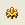

To render your fractal, click on the render button 
This will open the render window. First, you want to set your destination. Find the file you want your final picture to show up in, and make sure it's listed on the destination.Also, make sure to check out your file ending. If your file ends in a .jpg, your fractal will render on a background that is whatever color you chose in your render settings. If your file is set to .png, your fractal will render on a transparent background. The default render setting is usually .png, so keep that in mind if your fractal image suddenly starts appearing on a clear background.
Have fun rendering it! Oh, yes- you can use the adjust to adjust the camera settings: for example, to rotate the picture 90 degrees to have it oriented like I do. Adding different variations to the 4th, center transform will cause the center to look strange and different. Also, you can use the base diamond as a starting point to create other, stranger Julias. Experiment. Have fun!